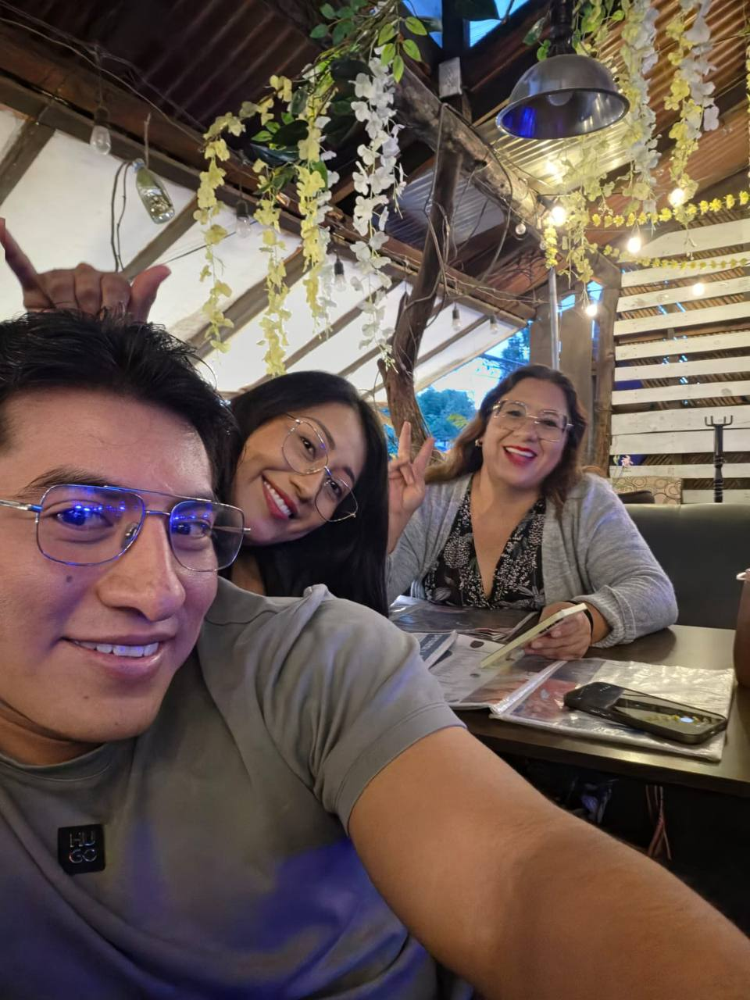
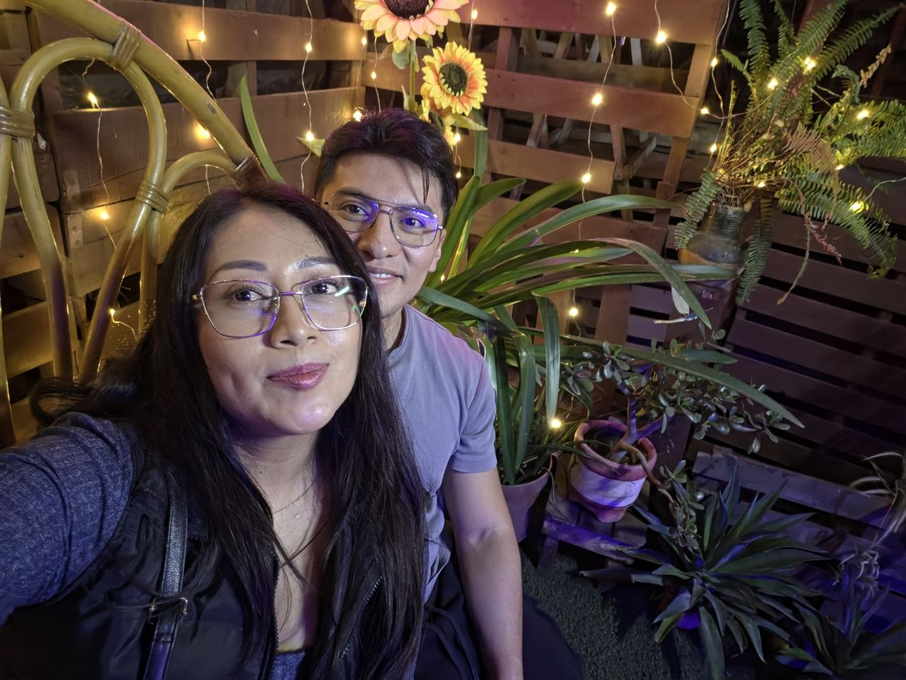
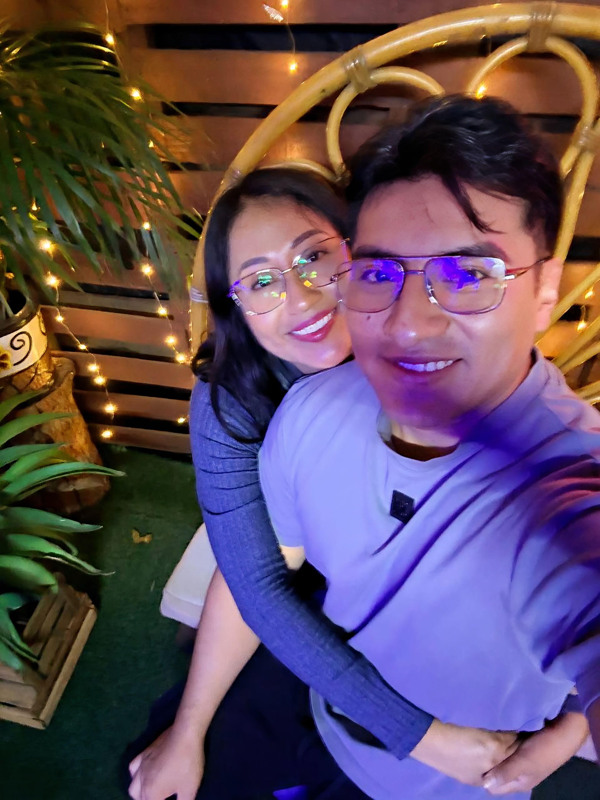
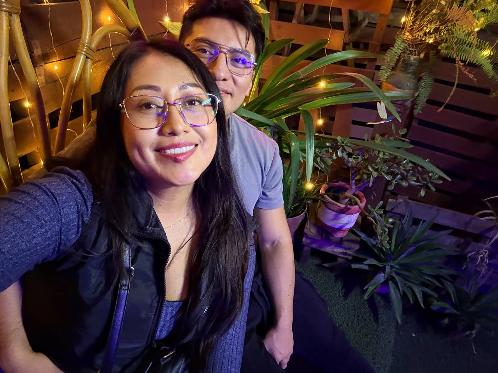

commit 0031
Date: 31 Jul 2026
🟡 Entre Risas y Secretos
🟢 Git Message
feat: birthday celebration with Leti
⚪ Story
31 de julio.
Ese día quedamos de vernos con Leti,
una amiga de las clases de baile,
para festejar su cumpleaños.
Como no lográbamos ponernos de acuerdo
con todo el grupo de amigos,
al final terminamos siendo tres:
Leti, tú y yo.
Tú pasaste por Leti
y yo llegué directamente al lugar.
Fuimos a un café que, sin saberlo,
terminaría convirtiéndose en uno de mis favoritos.
Era bonito,
tenía muchas luces
y, como ya sabes,
a mí me encantan las luces. ✨
Desde que llegamos,
las risas no faltaron.
Con Leti es prácticamente imposible
que falten las risas.
Platicamos de todo un poco.
De la vida.
De los problemas.
De nuestras cosas.
Y terminamos divirtiéndonos muchísimo.
Según Leti,
tú eres su amor,
su pollito. 😂
Y claro...
ella no sabe que tú y yo salimos.
Así que tocaba comportarnos
como si entre nosotros no hubiera nada.
Aun así,
nos tomamos fotografías juntos
y disfrutamos muchísimo la tarde-noche.
Después de pasar gran parte de la tarde ahí,
llegó el momento de irnos.
Tú llevaste a Leti a su casa
y yo quedé de verte después en tu casa.
Así que la noche todavía no terminaba.
Me fui contigo
y pasé la noche ahí.
Al día siguiente me quedé un rato más
y por la tarde me regresé,
porque tenía que ir a trabajar.
Y así terminó otro convivio.
Una celebración que comenzó como un cumpleaños
y terminó siendo otra de esas tardes
que se disfrutan por la compañía,
por las risas
y por todas esas pequeñas cosas
que solamente nosotros sabemos.
🟣 Developer Notes
Birthday mode: ACTIVATED. 🎂
Party size: 3.
Favorite café: UNLOCKED. ✨
Laughs: UNLIMITED.
Leti mode: ACTIVATED. 😂
"Pollito" status: CONFIRMED.
Secret relationship protocol: ACTIVE. 🤫
Photos successfully captured.
Overnight stay: COMPLETED.
🟢 Impact on Project
+ Leti birthday documented.
+ New favorite café unlocked.
+ Another shared experience with friends archived.
+ Secret relationship protocol successfully maintained.
+ More memories added outside our usual plans.
🟢 Commit Status
✔ Completed
✔ Reviewed
✔ Ready for Release
🖼 Recuerdos

Bendito entre las mujeres.

😊☺️😘

A escondidas.

Qué difícil disimular cuando la confianza nos delata.